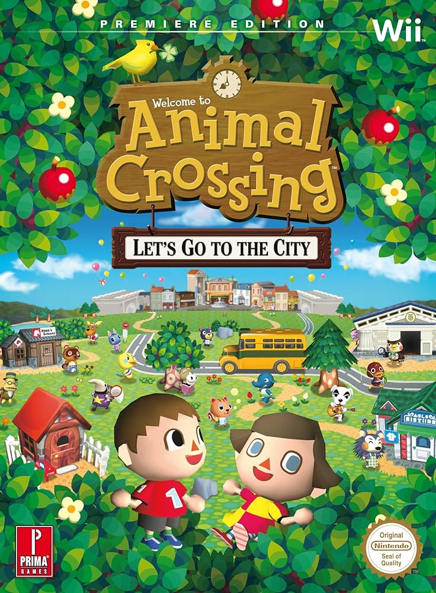
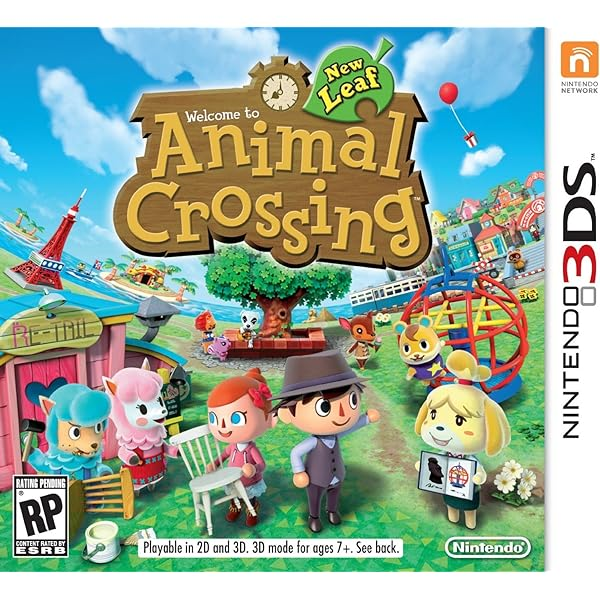
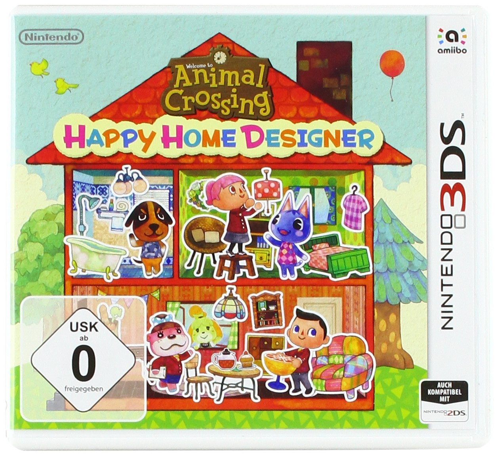
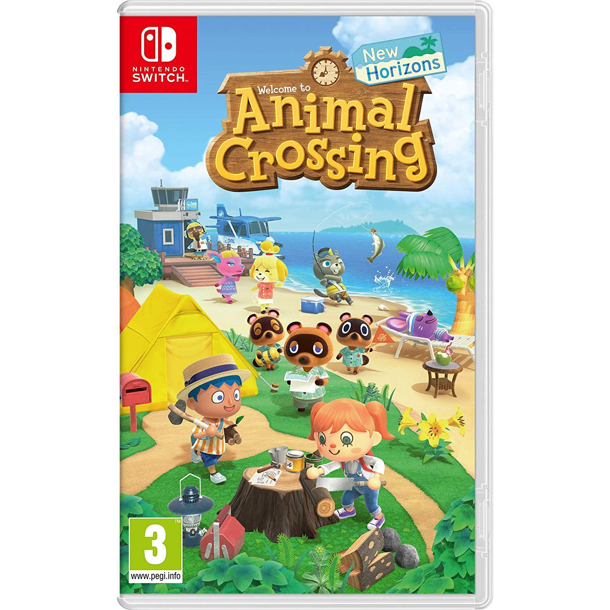

Fran vendrá hacia nosotros y nos dira en que queremos comenzar la partida. En una partida ya hecha en Animal Crossing: Wild World o Empezar una totalmente nueva. A continuación estarás en un BUS donde tienes que introducir tu nombre y el nombre del pueblo al que quieres ir mediante el teclado virtual de Wii luego se te harán unas preguntas que definirán tu aspecto (para más información consulte el artículo Guía de Aspectos). Para luego llegar al pueblo. n la ciudad podrás entrar al teatro donde actúan el Dr. Sito o el Dr. Sote , para enseñarte animaciones, pero solo podrás tener cuatro a la vez. La entrada es de 800 Bayas. Se puede también entrar en la AAD donde atiende Sisebuto y se puede ver decoraciones en la habitación del fondo. También se puede entrar en la tienda de Graciela, La Divina Graciela para comprar cosas diseñadas por Graciela, donde te atenderá Trini. Se puede subastar en la casa de subastas de un giroide llamado Loid (Giroide en español). Además se puede cambiar el color de los zapatos con Betunio, una mofeta. También volverá Marilín, pero esta vez no estará en Nook's, sino en su propia tienda. En la ciudad se puede cortar el pelo en más variedad de peinados y maquillarse con la cara de un Mii.

Animal Crossing: New Leaf (2013)
New Leaf marca un gran cambio en la serie, ya que el jugador ahora se convierte en el alcalde del pueblo. Con la ayuda de la gente del pueblo y "una secretaria ansiosa", ahora el trabajo del jugador es hacer del pueblo un lugar mejor para vivir. New Leaf también tiene un cambio de estilo artístico, con los jugadores y los vecinos que tienen proporciones más parecidas a las humanas, en lugar de ser de estatura más que se ha visto en juegos anteriores, así como los árboles, las flores y las casas adquieren una apariencia más realista.
Animal Crossing: Happy Home Designer (2015)
Crea casas de ensueño, diseña jardines espectaculares y da vida a la plaza del pueblo en Animal Crossing: Happy Home Designer, ¡solo para la familia de consolas Nintendo 3DS! Escoge un terreno y haz las veces de constructor y paisajista personalizando la casa y el jardín. Después, decora el interior. Podrás hacerlo con toda comodidad, porque solo necesitarás los controles de la pantalla táctil para mover muebles de un lado a otro, cambiar suelos, empapelar paredes... En fin, que podrás decorar la casa desde el suelo hasta el techo, ¡sin despeinarte siquiera! Desata tu imaginación e interpreta a tu manera las pautas que te da cada animal, ¡pero que no se te olvide incluir en tu proyecto sus objetos favoritos!
Animal Crossing: Pocket Camp (2017)
¡Decora tu parcela con los enseres que más te gusten para mostrar tu estilo! Hay de todo: tiendas de campaña, hamacas, hogueras... ¡hasta sofás de peluche! Podrás combinar diferentes elementos para crear distintos ambientes. ¿Te apetece abrir una cafetería con jardín? ¿O prefieres organizar un concierto al aire libre? Si tienes ganas de divertirte, puedes montarte tu propio parque de atracciones, ¡con tiovivo y todo!

Animal Crossing: New Horizons (2020)
Vive a tu ritmo mientras cuidas tu jardín, pescas, decoras, recoges bichos y fósiles, conoces a los animales que habitan la isla y mucho más. La hora del día y las estaciones coinciden con el mundo real, por lo que la vida en la isla continúa aunque tú no estés ahí.
